Bind your own diary
Four covers in classic and modern, four papers, ornaments and three rulings — including a blank page. The cover you pick is the first thing you see every time you open the app.
Most mood trackers give you a slider and a blank box. MyMood gives you a diary — you choose the cover, the paper and the ruling, then write your day the way you'd write it on the page. The moods, the calendar and the charts come with it.
Free to use every day. MyMood Pro unlocks the extras — and never hides what you already wrote.
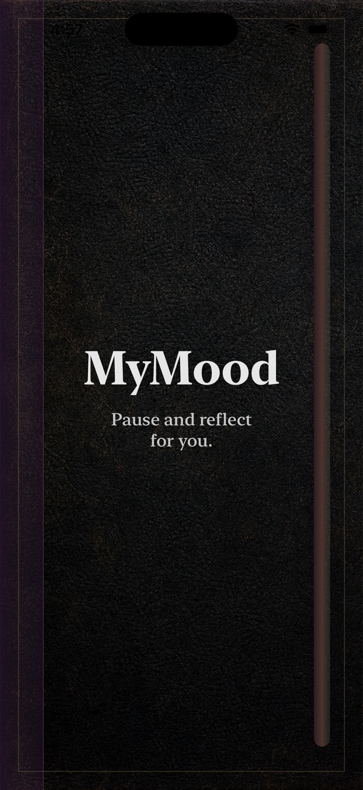
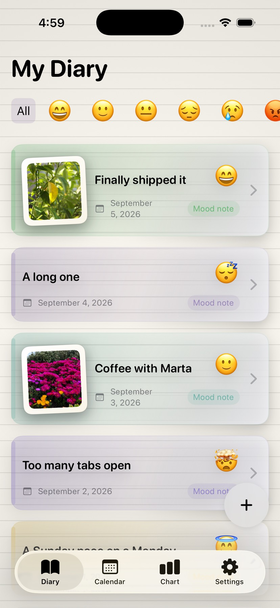
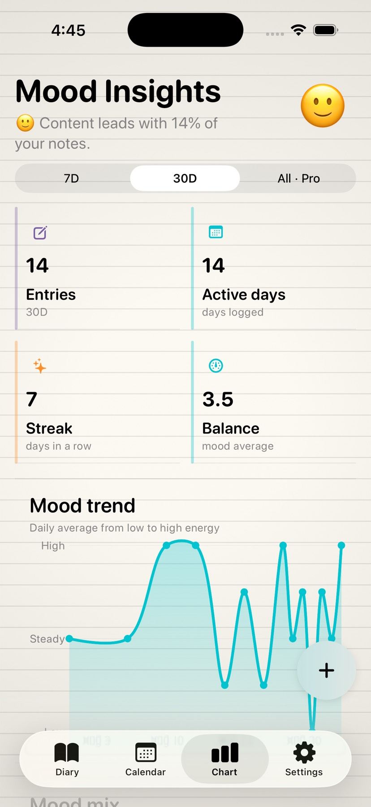
Why it's different
Mood apps ask you to rate your day from one to five, and after two weeks you stop, because nothing you wrote felt like it was yours.
MyMood starts from the object instead. It opens on a cover you chose. The page you write on has the paper and the ruling you picked. Your entry reads like a page from a journal, not a record in a database — and that small difference is what makes people come back on day thirty.
“Everything a mood tracker does — moods, calendar, charts, reminders — wrapped in something that looks like it belongs to you.”
What's inside
Built entirely with native iOS frameworks, so it feels like part of the phone — fast, quiet and offline.
Four covers in classic and modern, four papers, ornaments and three rulings — including a blank page. The cover you pick is the first thing you see every time you open the app.
Not a number out of five. Happy, tired, overwhelmed, at peace, frustrated, confident — each with its own soft colour, so a month of entries reads at a glance.
On the days you'd rather talk than type, dictate the entry and MyMood turns it into text on the page. The words are saved — the audio never is.
ProPin a picture to the entry and the page starts to look like a scrapbook. MyMood only ever sees the photos you pick yourself.
See the month at a glance, tap a day to read it back, and set a nudge for the evening so the habit survives its first week.
Seven days, thirty days or your whole history: the trend, how the moods were distributed, and the rhythm of your week — drawn with Swift Charts.
Turn on App Lock and the diary asks for Face ID or Touch ID every time it comes back. It's part of the free app, because a private journal has to actually be private.
Pick the appearance in Settings and the whole diary follows — including the lock screen. Both modes were drawn on purpose, not inherited.
Keep the animated cover as your little ritual, shorten it, or skip it entirely and land straight in the diary. Your call, in Diary Style.
The vocabulary
Every mood carries its own pastel colour through the diary, the calendar and the charts.
How it works
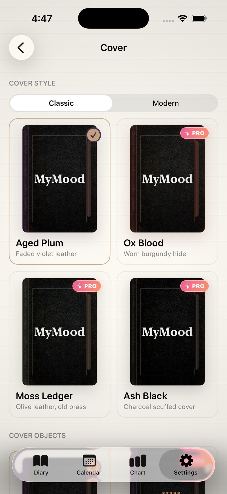
Pick the cover, the paper, the ruling and an ornament. Change your mind whenever you want — nothing you wrote is affected.
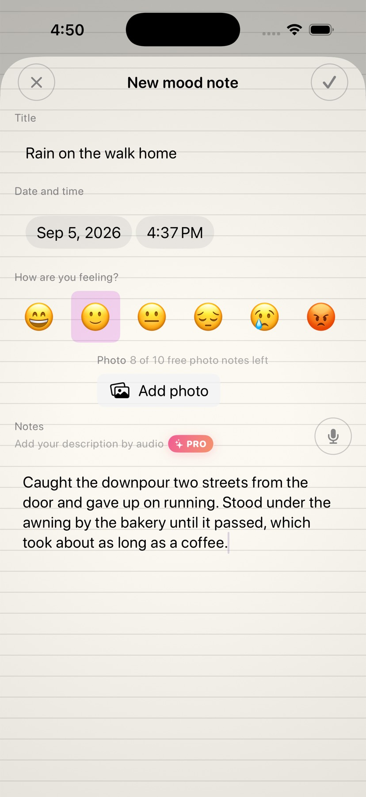
Tap +, choose how the day felt, and write — or dictate. Add a photo if the day deserves one. Then close the app and forget about it.
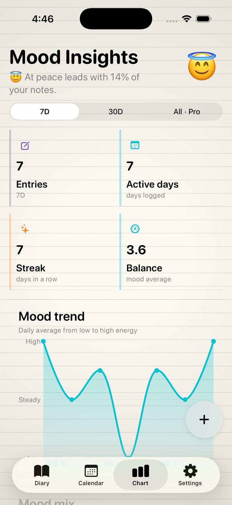
After a couple of weeks the charts start earning their place: what the month looked like, which moods came back, and how your weeks tend to go.
A closer look
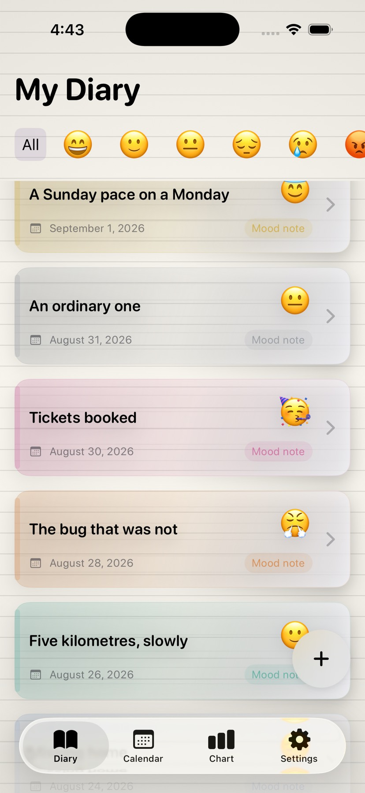
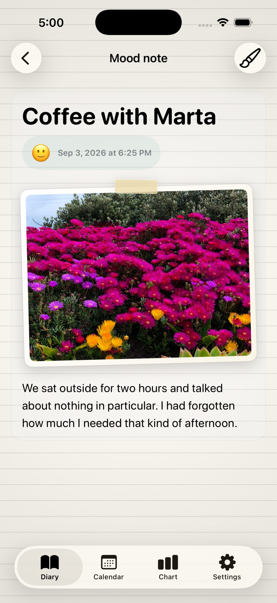
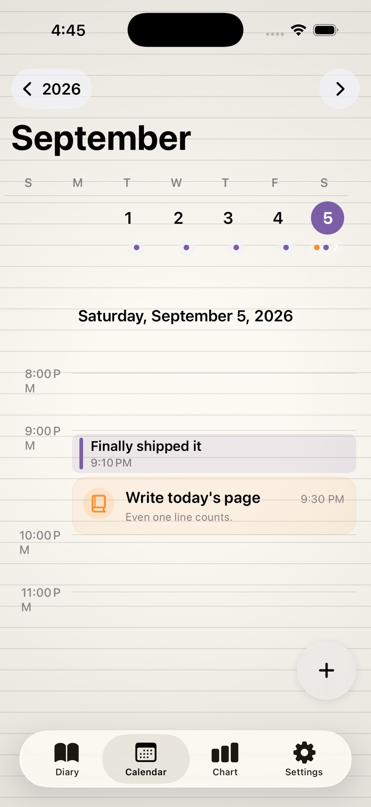
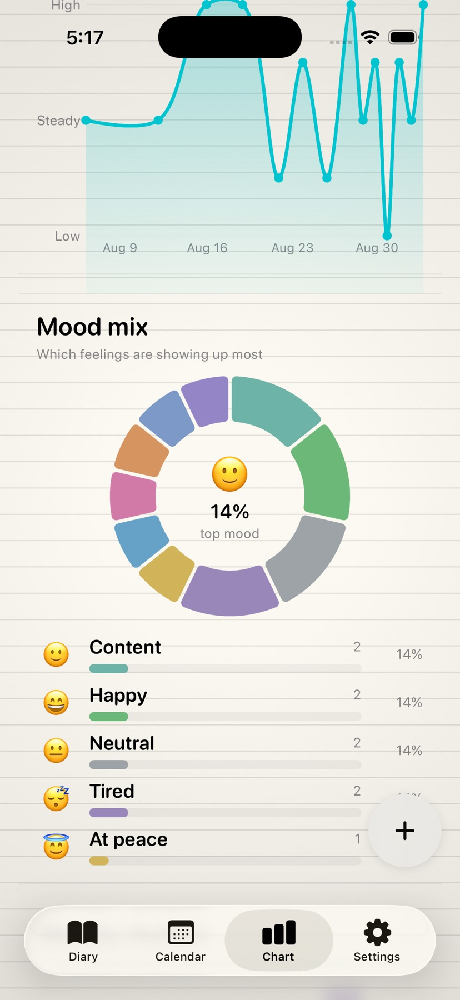
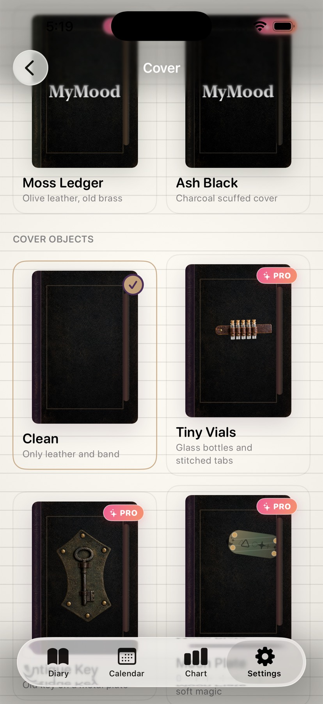
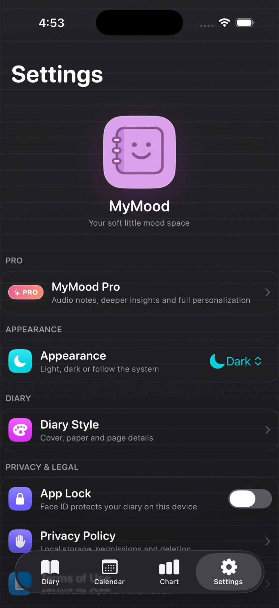
Privacy
MyMood has no sign-up screen because it has no server. There is no account to create, nothing to sync and nobody on the other end. What you write lives in the app's private storage on your iPhone, and that's the end of the story.
MyMood Pro
Writing your diary is free and always will be — text entries are never rationed. Pro unlocks the extras, and if it ever lapses, nothing you already wrote is hidden from you.
€0 / forever
No account, no trial countdown.
€9.99 / year
or €1.99 a month · prices shown in your local currency in the app
| Feature | Free | Pro |
|---|---|---|
| Written diary entries | Unlimited | Unlimited |
| Voice notes | — | Included |
| Photos | On up to 10 notes | On every note |
| Reminders | 3 at a time | Unlimited |
| Insights | 7 and 30 days | All time + weekly rhythm |
| Diary Style | 1 cover, 1 paper, 1 ruling | Everything, plus ornaments |
| App Lock and full history | Included | Included |
Limits are counts, not monthly quotas — deleting a reminder frees its slot, and swapping the photo on a note you already illustrated doesn't use a new one.
Questions
No. MyMood opens straight into your diary — there is no sign-up, no email and no password, because there is no server on the other side.
In the app's private storage on your iPhone. MyMood doesn't upload it anywhere, which also means that if you delete the app, the diary goes with it. Keep an iPhone or iCloud device backup if you want a safety net.
MyMood 2.0 requires iOS 17.6 or later and is built for iPhone, in portrait. It isn't optimised for iPad in this version.
No. Speech recognition converts what you say into text, MyMood saves that text into your entry, and no audio file is kept. You can revoke microphone and speech access at any time in the iOS Settings app.
Nothing is hidden. Everything you already wrote — including photos, voice-dictated notes and premium covers you had applied — stays readable. You simply stop being able to add new items beyond the free limits.
Through Apple, like any App Store subscription: iOS Settings → your name → Subscriptions, or tap Manage Subscription inside MyMood. Cancelling stops the renewal; you keep Pro until the end of the paid period.
Yes. Open the Pro screen and tap Restore Purchases while signed in with the same Apple Account you bought it with. Your diary itself does not travel with the subscription, so restore it from your device backup.
Yes — there's an option in Settings that erases your whole diary from the device. Because MyMood has no account and no server copy, that deletion is final and we can't undo it for you.
Free on the App Store, no account required. Pick a cover, write one honest sentence, and see how the month reads a few weeks from now.